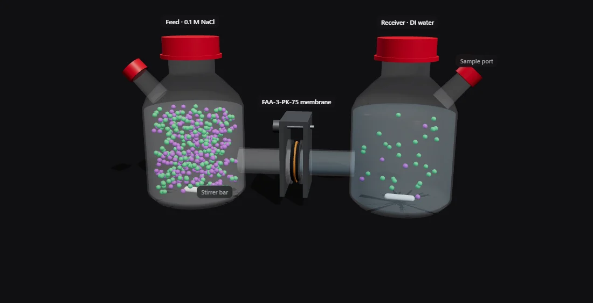
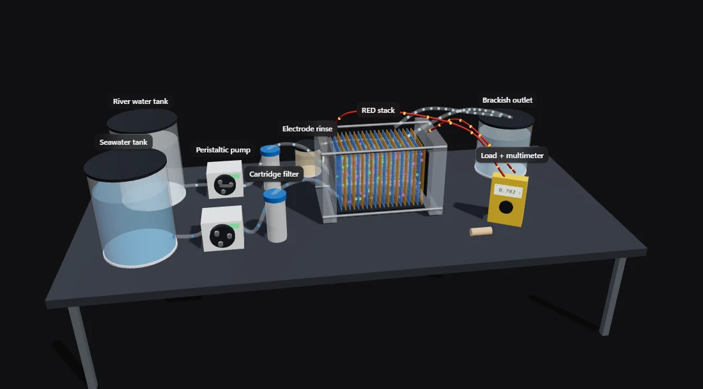

Content
Chemical engineering, explained in Arabic.
On Instagram I make content that raises awareness of chemical engineering and shares what I learn: what the degree covers, how the projects work, and what the field can do.

Hi, I’m Mohammed Anwar Mahram.
I study chemical engineering at Atılım University in Ankara (BSc, expected 2027). My research looks at how ions move through ion-exchange membranes, the heart of reverse electrodialysis, which turns the meeting of river water and sea water into electricity.
Research
A bachelor’s student research project funded by Atılım University (LAP), under the guidance and supervision of Assoc. Prof. Dr. Enver Güler.
Research project ATÜ-LAP-2526-07 · 2025–26
Chloride transport through a Fumasep FAA-3-PK-75 anion exchange membrane, measured in a two-compartment diffusion cell and replayed in 3D from our lab data.
Learn more
Congress · 2026
Oral and poster presentation of our blue-energy research at the Engineering Sciences and Researches Student Congress.
Learn more
Next · 2026–27
A bench-scale reverse electrodialysis stack to measure voltage and power density with the membranes we characterise.
Learn more
Engineering projects
Team design projects from my chemical engineering degree.
CHE406 Chemical Engineering Design II · 2026
A 400,000 t/y purified terephthalic acid plant in Bandırma using the Amoco-BP process, from reactors to cash flow.
Learn moreCHE438 Product design · 2026
A superhydrophobic polyester fabric: SiO₂ nanoparticles and a silicone coating, applied by dip coating.
Learn moreCMPE468 Machine Learning for Engineers · 2026
Machine learning on 3,276 water samples and 9 physicochemical measurements, from pH to sulfate, to predict potability.
Learn moreExperience
Skills
I build software and websites with AI coding agents. See my coding projects ›
Education
BSc Chemical Engineering, Faculty of Engineering, Ankara · 2022 – 2027 (expected) · GPA 3.00 / 4.00
Content
On Instagram I make content that raises awareness of chemical engineering and shares what I learn: what the degree covers, how the projects work, and what the field can do.
Open to internships and research opportunities in chemical engineering. References are available on request.
Blue Energy: the effect of monovalent ion selectivity in membranes on salinity gradient energy generation. A bachelor’s student research project with Saed Wael Suleiman, under the guidance and supervision of Assoc. Prof. Dr. Enver Güler, funded by Atılım University (LAP).
We presented “Blue Energy: The effect of monovalent ion selectivity in membranes on salinity gradient energy generation” at the MÜBAK 2026 Engineering Sciences and Researches Student Congress, as an oral talk and as a poster.
With Saed Wael Suleiman; advisor Assoc. Prof. Dr. Enver Güler.
The next step of the research: a bench-scale reverse electrodialysis stack fed with river-like and sea-like water.
Design of a purified terephthalic acid (PTA) production plant in Bandırma, Türkiye, using the Amoco-BP process. A team of five; report submitted June 2026.
Instructors: Assoc. Prof. Dr. Sertan Yel, Assoc. Prof. Dr. Enver Güler, Assist. Prof. Dr. Hakan Demir.
Can a model tell drinkable water from unsafe water using routine physicochemical measurements? A five-person team project from my machine learning course, linking data science with my chemical engineering background. Supervised by Dr. Emel Savku.
A chemical product design for a superhydrophobic, breathable textile, developed as the start-up concept “HydroFab” with Gülin Akkan and Selin Erdal.